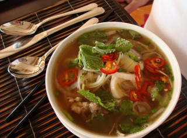

Первые блюда
Быстро
Суп сырный
Легенда советской кулинарии, звезда студенческих кухонь — сырный суп. Он прекрасен своей
элементарностью — суп будет готов, как только сварится картошка. Это еще одна вещь, которую
дружба делает лучше, даже если это сырок «Дружба».
Суп куриный
Из самых простых продуктов, легко и быстро, семье на обед!
Суп с картошкой и курицей - один из самых вкусных, питательных и быстрых в приготовлении.

Борщ классический с мясом говядины и свинины
Из простых продуктов, вкусный, полезный, для всей семьи!
Классический борщ с мясом говядины и свинины можно сварить
очень быстро, если нарезать мясо более мелкими кусочками.
Это идеальное блюдо для семейных обедов.

Блюда стран мира
Вьетнамский суп «Фо» с курицей
Захотелось необычной восточной экзотики – приготовь суп Фо.